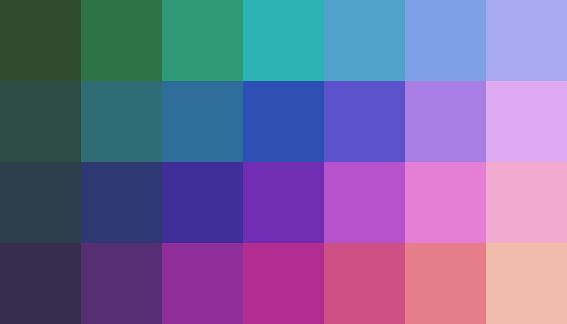

MultiSpec© Lessons
Give a breif description for each question. It can be more one answer. After answering the questions, hover over the question. There is more then one right answer.
What is a satellite?

Teacher Activities
The teacher should provide a large number of resources that students canwhat satellites actually look like. Some sources are:
- encyclopedia, both text and electronic (CD based)
- film, video, and photos from Libraries and Regional NASA resource center
- magazines (Life, Time, Smithsonian, National Geographic, Air & Space, Science
etc.) - field trips to museums, especially the Smithsonian Air and Space Museum
Student Activities
Using resources available, students need be able to internalize the ideas of:- What satellites look like
- How big satellites are
- What kinds of equipment satellites carry
Students can display their findings as:
-
Models of satellites, either to scale, or of satellites that they have designed to do
special jobs, describing the equipment these would carry -
Posters, charts and drawings of either real satellites, or satellites they have
designed
What is a pixel?

Activity
Materials: red, blue, green, white, and black objects
Select four students to come to the front of the room. Have them join hands to form a
square. The square they have formed represents a pixel. Fill the student pixel with red
objects. Have the students determine which of the primary colors are being absorbed or
reflected. Repeat the process using blue objects, and then green. Form a second student
pixel. Fill one of the pixels with black objects and the other one with white objects. Discuss
the difference between the two pixels.
Now create three pixels reflecting each of the three primary colors. Instead of using objects
to determine the pixel color, select three students with the same color clothing to stand
inside each of the pixels. Assign number 1 to the pixel containing the red students, 2 to the
green students and 3 to the blue students. Discuss how there are three different classes of
pixels. Move one student from each of the pixels to a different pixel class, thereby changng
the makeup of each of the pixels. Discuss how the satellite will see this pixel. Have new
classes been formed? Using the nine students in different combinations, how many new
classes are possible?
What does digital mean?
Discussion
The three analog traces are plotted for 38 pixels. Tick marks on the horizontal axis correspondto the boundaries between pixels, and the ticks on the vertical axis mark digital counts 0, 32
64, 96. 128, 160, 192, 224, and 256. A ruler and calculator are useful for converting the
vertical distances to counts ranging from 0 to 255.
Numbering the pixels from left to right, the first pixel has a low reflectance in band 1 and
medium-high reflectance in bands 2 and 3. After digitizing these levels, the specral signature
for this pixel is approximately:
| Band 1 | Band 2 | Band 3 | Band 4 | |
| Pixel 1: | 11 | 159 | 139 | 1 |
If we call this "Class 1," which other pixels would belong to Class 1? Ignore small-scale
fluctuations in the signals, the first 6 pixels have the same signature and thus would be
assigned to Class 1. The next 3 pixels (7-9) are a transition (boundary) group where band 3
is decreasing. These might be classified into three unique classes (classes 2-4) since all
three pixels have different band 3 values.
The next 3 pixels (10-12) are similar and belong to a new class, Class 5. Compared to Class
1, this class has the same reflectance in bands 1 and 2 but a much lower reflectance in band
3. In fact, if we considered only bands 1 and 2, the first 12 pixels would all be assigned to
the same class. Variation in band 3, however, shows that there are actually several distinct
classes among these 12 pixels. There are at least 2 ground cover types, "Class 1" and "Class
5." and three transition pixels which may actually never be associated with ground cover
types. Instead, these probably constitute "edge" pixels lying at the boundary between distinct
cover types.
To illustrate this situation, suppose bands 1 and 2 are visible green and red bands, and
suppose band 3 is a near or middle infrared band that is sensitive to plant stress (e.g., moisture
content). Pixels 1-12 might all lie in a forested area which would appear as a uniform color
to the human observer who sees only blue, green and red visible light. However, the remote
sensor detects infrared radiation in band 3 which reveals that a portion of the forest is
stressed.
Students who tend to be overly precise may find this exercise frustrating. One could
potentially divide the 38 pixels into 38 distinct classes if too much attention is given to
Small-scale fluctuations. To simplify this activity for younger students, the teacher may
Wish to redraw the analog traces to eliminate small fluctuations and also perhaps some of
the transition pixels.